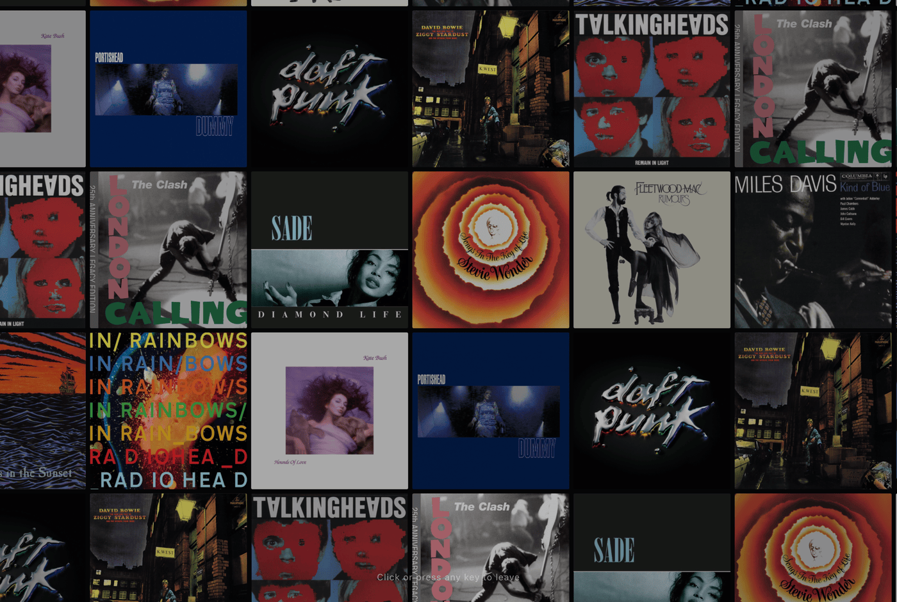

Screensaver and Ambient Display
Screensaver mode displays a drifting grid of album covers from your collection.
Perfect for mirroring to a TV or setting an iPad on a stand beside your turntable speakers, Screensaver mode renders an endless grid of your album covers drifting slowly across the room while occasionally highlighting albums with artist, album, and label details.
The Ambient Cover Wall
The screensaver constructs a continuous canvas of covers drawn from your library:
- Motion: The wall drifts in a slow path across the screen.
- Highlights: Individual covers periodically lift forward with artist and title details.
- Interaction: Click or tap a highlighted album to exit screensaver mode and open its gatefold view.

Launching Screensaver Mode
Launch screensaver mode using any of these methods:
- Keyboard Shortcut: Press 4 anywhere in the app.
- Settings Menu: Open Settings and select Screensaver.
- Direct URL: Append
?wallto your Spindex URL to load straight into screensaver mode.
Screen Wake Lock and Fullscreen
When the screensaver starts:
- Enters full-screen mode where supported.
- Requests a Screen Wake Lock to prevent the display from sleeping.
- Press Esc, tap the screen, or press any key to return to the crate.